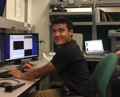

Luis E. Nunez
Department of Physics and Astronomy
Cal Poly Pomona
3801 West Temple Avenue
Pomona, CA 91768
Phone: 
email: 
Education
I attended California State University, Los Angeles for two years as a Physics major.
In 2014 I transferred to Cal Poly Pomona, headquarters of the astronomy programs
Cal-Bridge and
CAMPARE.
Here I was introduced to astronomy research and Python programming by galaxy formation theorist
Dr. Jorge Moreno (now at Pomona College).
Our project entailed extracting "merger trees" from the Illustris simulation.
Set to graduate in Spring 2018, I am currently applying to astronomy graduate programs.
Research Interests
- Characterization of exoplanets and atmospheres
- Radial velocity, transit, microlensing, and direct imaging methods of exoplanet detection
- High-resolution spectroscopy and adaptive optics imaging of massive planets and low-mass stars
Internships
- 2017 UCSD STARS:
At UC San Diego with Dr. Quinn Konopacky I reduced and analyzed high-resolution spectroscopy
of the extrasolar planet β Pictoris b.
- 2016 SAO REU Summer Intern Program:
At Harvard University with Dr. John Johnson I reviewed archival radial velocity data of stars that host a Hot Jupiter
and fit the data to a Keplerian model with a non-linear curve fitting Python package.